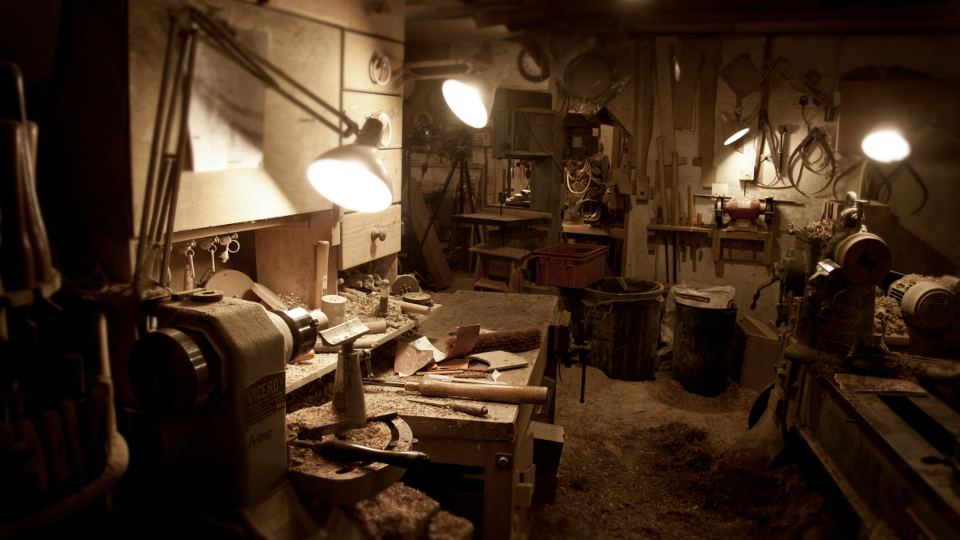
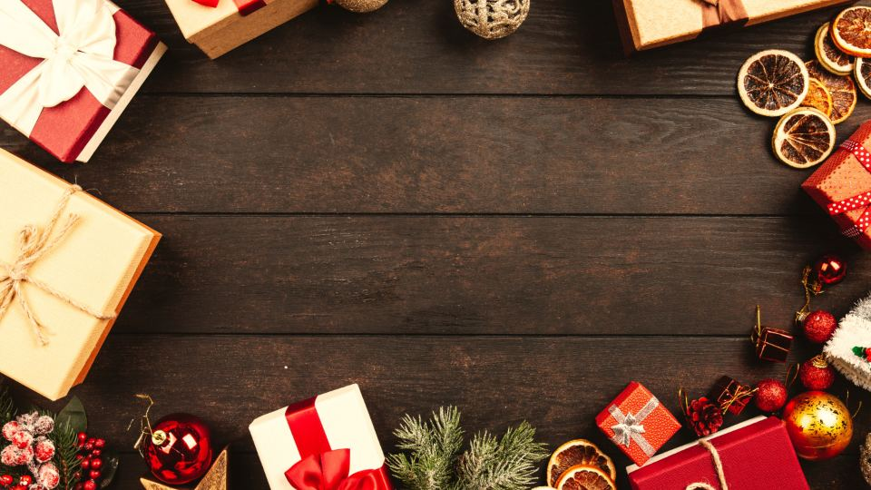

「会社の名前ではなく、自分の名前やお店の名前で何かを届けてみたい」。副業を考えるとき、そんな気持ちを持つ方は少なくありません。ただ、いざ始めようとすると、ブランド名、商品、売る相手、お金や時間のことなど、決めることが多くて手が止まってしまいがちです。
この記事では、副業で自分のブランドを持つときに最初に決めておきたいことを、順番に整理します。本業や家族との両立で気をつけたい点にも触れ、最後に選択肢の一つとして、オリジナルラベルのお酒を扱う始め方も紹介します。
自分のブランドを持ちたいのに迷う理由｜最初に整理したいこと
ブランドづくりで迷うのは、意欲が足りないからではありません。決める順番が見えていないことが、いちばんの原因です。まずは、多くの方が引っかかりやすい点を整理しておきましょう。
- 何を売るかが決まらない：やりたいことが多い、または逆に思いつかず、商品の候補が絞れない
- 誰に届けるかがぼんやりしている：「たくさんの人に」と考えるほど、伝え方や値段が決めにくくなる
- 自分にできるか不安：デザインや写真、販売の経験がないと、見た目の段階で止まってしまう
- お金と在庫が心配：最初にまとめて仕入れると、売れ残ったときの負担が大きくなる
- 時間が読めない：本業や家事の合間で、どれくらい続けられるのか見通しが立たない
ブランドは「名前」より先に「誰の、どんな場面のためのものか」を決めると形になりやすくなります。 名前やロゴは、そのあとで決めても遅くありません。
副業ブランドの決め方｜判断のポイント

ポイント1：届ける相手と場面を一つに絞る
最初に決めたいのは、商品よりも「誰が、どんなときに使うか」です。たとえば「職場の送別会で渡すもの」「子どもの誕生日を少し特別にしたい親御さん向け」のように、場面まで具体的にすると、商品の形や価格の考え方が自然に決まってきます。
相手を絞ると、売れる範囲が狭くなるように感じるかもしれません。けれど副業で使える時間は限られているため、伝える相手がはっきりしているほうが、少ない手間で届きやすくなります。
ポイント2：自分の手間に合った商品にする
次に考えたいのは、一つの商品を届けるまでにかかる手間です。手作りの品は思いが込めやすい一方、一つずつ時間がかかります。仕入れて売る形は手間が少ない分、ほかとの違いが出しにくくなります。
本業がある方は、平日の夜や週末の数時間で回せる作業量かどうかを、始める前に一度書き出してみるのがおすすめです。注文が入ってから作る形にできるか、作業を道具でどこまで短くできるかも、確認しておきたい点です。
ポイント3：在庫と初期費用を小さく抑えられるか
ブランドを始めたばかりの頃は、どれだけ売れるかがまだ分かりません。最初にたくさん仕入れたり作り置きしたりすると、売れ残りがそのまま負担になります。
注文を受けてから作れるか、少ない量から試せるか、必要な道具や資材がはっきりしているかを確認しておくと、無理のない範囲で始めやすくなります。
ポイント4：名前と見た目は「続けられる形」で決める
ブランド名は、相手と場面が決まってから考えると、言葉を選びやすくなります。覚えやすく、読み方に迷わず、ほかの人の商標や屋号と重ならないかも確認しておきましょう。
見た目のデザインは、最初から凝りすぎなくても大丈夫です。テンプレートや作成ツールを使って、同じ雰囲気で作り続けられることのほうが、ブランドとしての印象は残りやすくなります。
ポイント
「相手と場面」→「手間と在庫」→「名前と見た目」の順に決めると、迷う時間を減らせます。
始める前に知っておきたい注意点

注意
- 本業の就業規則：副業が認められているか、届け出が必要かを、勤め先の規則で確認しておきましょう
- 税金の手続き：副業で所得が出た場合、確定申告が必要になることがあります。帳簿や領収書は最初から整理しておくと安心です
- 扱う商品の許可：食品やお酒など、商品によっては販売に許可や免許が必要な場合があります。始める前に、管轄の窓口や専門家に確認してください
- 家族との時間：作業場所や作業時間について、先に家族と話しておくと、続けやすくなります
- 名前の権利：ブランド名やロゴが、ほかの人の商標と重なっていないかを調べておきましょう
注意
許可や免許が必要な商品を、確認しないまま売り始めることは避けてください。分からない点は、始める前に必ず問い合わせておくと安心です。
選択肢の一つ｜オリジナルシャンパン（オリシャン）という始め方
ここまでのポイントを踏まえた選択肢の一つとして、オリジナルシャンパン（通称オリシャン）があります。スパークリングワインのボトルに、オリジナルデザインのラベルを付けた商品で、誕生日や結婚式、推し活、お店の周年、夜の飲食店でのお祝いの演出などに使われています。全国で毎月およそ30万本が流通しているといわれる分野です。
運営元が提供する「オリシャンフィルムラボ 開業パッケージ」は、先ほどの判断のポイントに次のように当てはまります。
- 届ける相手と場面：お祝いという場面がはっきりしているため、「誰の、どんなときのためのブランドか」を決めやすい
- 手間と見た目：専用エディタで、文字を入れる・画像を置く・テンプレートを選ぶだけでラベルが作れます。デザインの経験がなくても、同じ雰囲気で作り続けやすい仕組みです
- 在庫：注文を受けてから制作する形のため、大量の在庫を抱える必要がありません
- 名前：屋号は自由に決められ、自分のお店・ブランドとして運営できます
- 許可：お酒の販売には免許が必要になる場合があります。パッケージには酒類販売の許可ガイドがあり、法対策サポートも講習で案内されます
講習は1日・動画で受けられ、来社は不要です。全国対応のため、地方から始めることもできます。開業フルセットには専用資材や専用印刷機などが含まれ、別途、専用エディタの利用料（月額4,980円・税込）がかかります。費用の詳しい金額は、公式サイトでご確認ください。
一方で、お酒を扱うことに抵抗がある方や、免許の確認や手続きに時間をかけられない方、お祝いの場面とは別のテーマでブランドを作りたい方には、合わないこともあります。ご自身の届けたい相手と場面に合うかどうかで、判断してみてください。
よくある質問
ブランド名は最初に決めないといけませんか？
先に決めなくても大丈夫です。届ける相手と場面、商品の形が決まってから考えるほうが、言葉を選びやすくなります。決めたら、ほかの商標や屋号と重ならないかを確認しておきましょう。
本業が忙しくても、自分のブランドは続けられますか？
一つの商品を届けるまでの手間と、週に使える時間を先に書き出しておくと、無理のない量が見えてきます。注文を受けてから作る形にすると、時間の読みにくさを減らしやすくなります。
副業の収入は申告が必要ですか？
所得の額などによって、確定申告が必要になる場合があります。詳しくは税務署や税理士など、専門の窓口で確認してください。
オリシャンはデザインの経験がなくても作れますか？
専用エディタで、文字や画像を置き、テンプレートを選ぶだけでラベルが作れる仕組みです。1日の動画講習や制作ガイド動画、本部のサポートもあります。
お酒の販売免許がなくても始められますか？
お酒の販売には免許が必要になる場合があります。パッケージには酒類販売の許可ガイドがあり、法対策サポートも講習で案内されています。始める前に、ご自身の場合に何が必要かを確認しておきましょう。
まとめ
この記事のポイント
- 副業ブランドは、名前より先に「誰の、どんな場面のためのものか」を決めると形になりやすい
- 商品は、自分の手間・在庫・初期費用に無理がないかで選ぶ
- 就業規則・税金・商品の許可・名前の権利は、始める前に確認しておく
- お祝いの場面に向けたブランドなら、オリジナルシャンパンも選択肢の一つになる
自分のブランドを持つ方法は一つではありません。オリジナルシャンパンという形が気になった方は、話を聞いてみるだけでも大丈夫です。無料のLINE相談や公式サイトで、ご自身に合うかどうかを確かめてみてください。
この記事の要点を、別の切り口で短くまとめたものを note にも載せています。
※本記事の収益に関する数値はモデルケースの試算で、収益を保証するものではありません。地域・価格設定・営業努力により異なります。市場規模は公開情報をもとにした推計・予測です。最新の内容・費用は公式サイトでご確認ください。